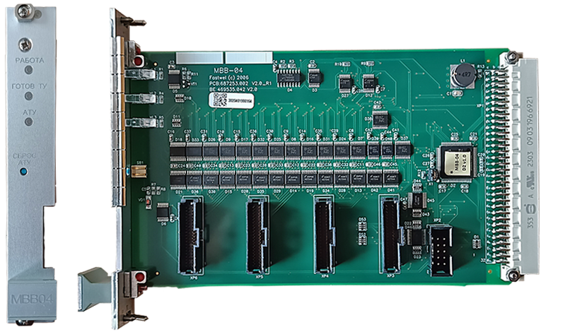

Замена МВВ

Замена неисправного МВВ производится при выключенном питании микропроцессорного блока «Основного» или «Резервного» комплекта, т.е того, на котором этот модуль установлен.
Отключение питания осуществляется на модуле источника питания (МИП) «Основного» или «Резервного» комплекта.
Порядок замены МВВ:
- Открутить фиксирующие МВВ винты.
- Извлечь модуль и отсоединить все разъёмы шлейфа.
- Взять исправленный модуль МВВ. Перемычки на новом и старом модуле должны занимать одинаковые позиции. Подсоединить последовательно, начиная с дальнего, разъёмы шлейфа к модулю.
- Вставить новый модуль в микропроцессорный блок.
- Зафиксировать новый модуль МВВ винтами.